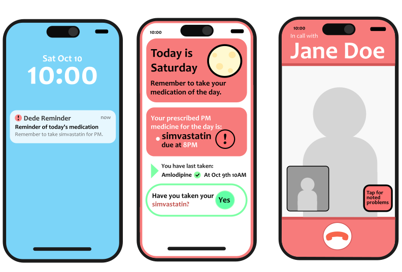
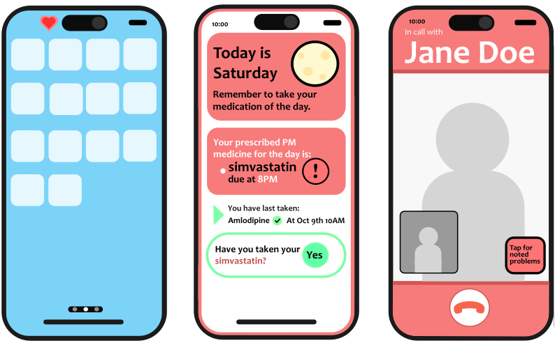
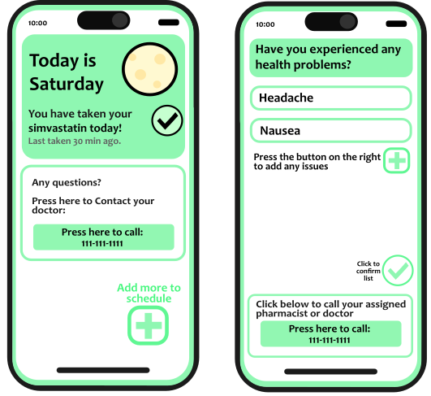

II

Medication Reminder App — primary screens
Timeline
My Role
Collaborators
Tools
I
This project was developed for a human-computer interaction course, where the objective was to design an application concept, and visuals for potential implementations, informed by principles of cognition, memory, and digital affordances. I proposed that our team create a medication reminder app tailored specifically to older adults, as this direction was a natural fit for the challenge given.
The problem space focused on the challenges seniors face when managing medication schedules. Declines in memory recall, processing speed, and the ability to navigate complex interfaces can make it difficult to take medications consistently and correctly. These challenges often occur in everyday routines, where missed or incorrect doses can lead to serious health risks, making clarity, simplicity, and reliability essential.
II
Our process was driven by research into how aging affects cognition and interaction. My research specifically focused on areas of how aging affects memory, intelligence, and processing speed. We identified that seniors struggle most with recall, multitasking, and managing complex medication schedules. Our synthesized research showed that recognition-based interfaces can be used to improve adherence to medication schedules.

Pillbox-inspired layout, dose confirmation, and trusted contact call screens.
"The challenge was to translate the comfort seniors feel with familiar, physical tools into digital spaces and the advantages those are able to offer."
From this insight I came to the idea that a skeuomorphic interface, designed to look like a real-life pillbox, could best communicate to older adults in a way that would support their varying comfort levels with smartphone apps and rely on learned recognition patterns. We prioritized large, easily identifiable interaction points and minimized unnecessary steps to maintain focus. To address potential gaps in adherence, we introduced a feature that alerts a trusted contact if a dose is missed.

Dose completed and symptom tracker screens.
Iteration and feedback, including insights from a healthcare UX professional, led to the addition of symptom tracking while preserving the app’s overall clarity and ease of use. With these key decisions in place, a teammate translated these features into prototype screens to visualize an implementation of the application.
III
This project highlighted the importance of grounding design decisions in research and translating cognitive principles into practical solutions. The final concept successfully created a balance between functionality and simplicity, resulting in an experience that supports users without overwhelming them. It reinforced the value of designing with empathy and a deep understanding of user needs.
If I were to continue this project, I would focus on conducting usability testing directly with older adults to validate assumptions and refine the interface further. Observing real user interactions would provide valuable insight into how the system performs in context and help identify opportunities to improve accessibility, clarity, and overall user confidence.